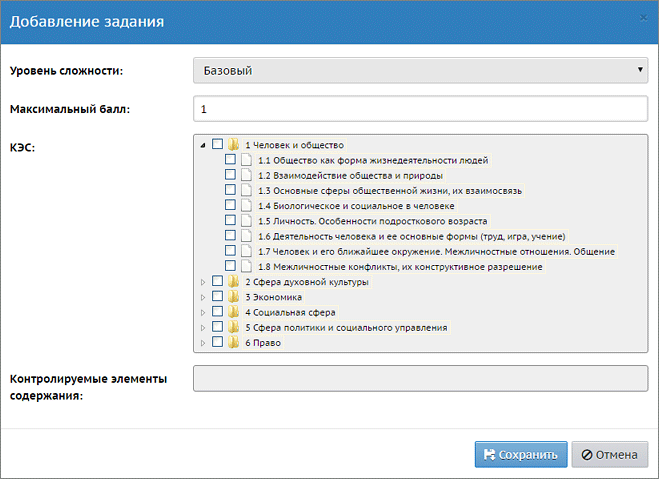
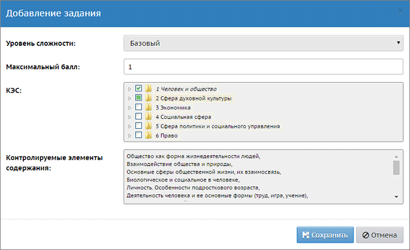
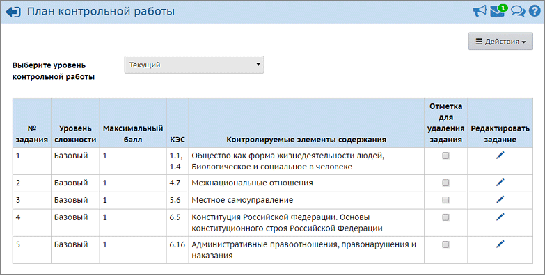

Добавьте последовательно задания в план контрольной работы с помощью кнопки Добавить задание. При этом появляется окно добавления задания:

Здесь для каждого задания заполняются следующие элементы:
| Уровень сложности («Базовый» или «Повышенный») выбирается из выпадающего списка. По умолчанию выбран базовый уровень. Каждое следующее задание наследует значение уровня сложности из предыдущего задания;
|
|
|
| Максимальный балл – баллы, которые зачисляются за полностью выполненное задание. По умолчанию установлено значение 1;
|
|
|
| КЭС: здесь выводится дерево КЭС для каждого конкретного предмета в отдельности:
|
| · | для классов средней ступени берутся Универсальные кодификаторы ООО,
|
| · | для классов старшей ступени используются Универсальные кодификаторы СОО,
|
| · | для начальной школы - Универсальные кодификаторы НОО (если они существуют).
|
| Справочник КЭС представлен в виде дерева, которое организовано по разделам. Каждый раздел открывается по нажатию на стрелочку возле папки с названием раздела.
|
| Раздел можно выделить, установив флаг рядом с его названием. Выделение снимается повторным нажатием на флаг; для выделения сразу всех элементов папки нажмите на корневой раздел.
|
| Если же в задание попадает не полный перечень корневой папки, то флагами выделяются только нужные элементы. В этом случае корневая папка помечается зелёным квадратом:
|
 |
|
|
| Контролируемые элементы содержания: раздел заполняется автоматически при выборе элементов содержания в разделе «КЭС».
|
|
|
Аналогичным образом необходимо добавить все задания для контрольной работы.
После того как все задания будут занесены в План контрольной работы, План будет выглядеть следующим образом:

В окне «План контрольной работы» по умолчанию выбран уровень контрольной работы «Текущий». При необходимости можно выбрать другой уровень – «Городской», «Региональный», «Административный».
Чтобы отредактировать какое-либо задание в плане:
нажмите кнопку Редактировать в соответствующей строке справа от задания.
Чтобы поменять порядок заданий в плане:
Щёлкните левой кнопкой мыши на какое-нибудь задание в районе столбца Контролируемые элементы содержания, далее, удерживая нажатой левую кнопку мыши, «перетащите» задание в нужное место списка и отпустите кнопку мыши. Задания будут автоматически перенумерованы.
Чтобы удалить какое-либо задание из плана:
поставьте напротив него флаг в колонке «Отметка для удаления задания» и нажмите кнопку Удалить выбранные задания.
Чтобы удалить план контрольной работы целиком:
нажмите кнопку Удалить план. Перед удалением плана нужно будет подтвердить операцию в соответствующем диалоговом окне.